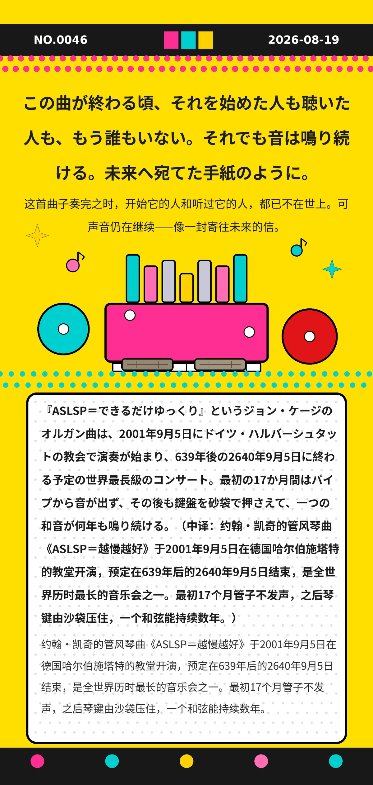

この曲が終わる頃、それを始めた人も聴いた人も、もう誰もいない。それでも音は鳴り続ける。未来へ宛てた手紙のように。
『ASLSP＝できるだけゆっくり』というジョン・ケージのオルガン曲は、2001年9月5日にドイツ・ハルバーシュタットの教会で演奏が始まり、639年後の2640年9月5日に終わる予定の世界最長級のコンサート。最初の17か月間はパイプから音が出ず、その後も鍵盤を砂袋で押さえて、一つの和音が何年も鳴り続ける。（中译：约翰·凯奇的管风琴曲《ASLSP＝越慢越好》于2001年9月5日在德国哈尔伯施塔特的教堂开演，预定在639年后的2640年9月5日结束，是全世界历时最长的音乐会之一。最初17个月管子不发声，之后琴键由沙袋压住，一个和弦能持续数年。）